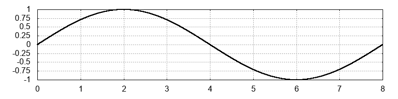

<section class="container-content">
    <div class="d-flex flex-column justify-content-around etapa1-texto">
        <div>
            <h5>Na nossa interface, vamos representar as ondas sonoras utilizando senoides, como o exemplo abaixo:</h5>
        </div>
        <div>
            
        </div>
    </div>
</section>

<div class="btn-etapas-container  ">
    <div class="btn-container">
        <button id="btn-voltar-context" onclick="btnVoltarEtapas(conteudo_etapa7.etapa7Conteudo2, 7)" class="btn selecao-etapas-btn" role="button">Voltar</button>
    </div>
    <div class="btn-container">
        <button id="btn-avancar-context" onclick="btnAvancar(conteudo_etapa7.etapa7Conteudo4, 7)" class="btn selecao-etapas-btn" role="button">Avançar</button>
    </div>
</div>